地政学
レイキャビクは北大西洋の小国首都で、北極圏、欧州、北米を結ぶ政治の窓口です。国会、官庁、大使館、港、空港が近く、漁業権、火山危機、エネルギー、観光管理が国家課題として街に現れます。島国の判断が集まります。
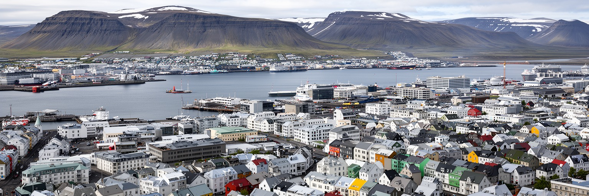
🇮🇸 アイスランド / ヨーロッパ / World City Atlas
北大西洋の火山島に置かれた世界最北級の首都です。小さな人口規模の中に、国会、港、地熱、観光、大学、音楽、住宅難、移民労働、自然災害への備えが凝縮しています。
都市の骨格
レイキャビクはファクサ湾に開く港町であり、国会と大学、住宅地、空港、港湾、温水プールが近距離に並びます。低層の街並みと広い空、火山島の自然が首都の日常を形作ります。
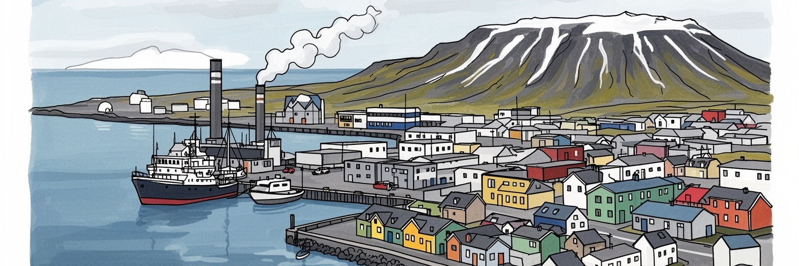
レイキャビクは北大西洋の小国首都で、北極圏、欧州、北米を結ぶ政治の窓口です。国会、官庁、大使館、港、空港が近く、漁業権、火山危機、エネルギー、観光管理が国家課題として街に現れます。島国の判断が集まります。
観光、行政、大学、IT、港湾、文化産業が中心ですが、ホテル、清掃、飲食、建設、介護、空港アクセスを支える労働も重要です。物価と住宅不足は働く人を直撃し、移民労働者の生活条件も今も都市の重要な論点です。
ルター派教会、文学、音楽、デザイン、温水プール、夜の小さなライブ空間が都市文化を支えます。移民の増加でカトリック、イスラム、正教会などの生活も見え、信仰と文化は静かに多様化し、祝祭も増えています。
教会、港、博物館、温泉、オーロラ観光の入口である一方、住民には家賃、車依存、冬の暗さ、観光混雑、火山灰や地震への備えがあります。プール、魚料理、ホットドッグ、散歩道も暮らしを身近に映します、日々。
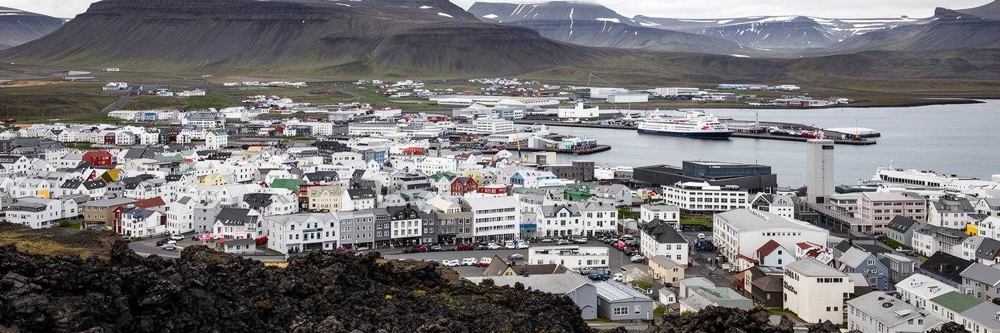
レイキャビクは、ファクサ湾へ向かって開く低い半島上の首都です。街の背後には山並みが見え、周囲には溶岩台地、温泉、海鳥のいる海岸、風の強い空地が広がります。中心部は大都市のような高層密度ではなく、港、議会、教会、住宅、大学、空港が短い距離で並ぶ構造です。この近さは便利さであると同時に、都市機能の余白の少なさも意味します。海は観光の眺めであるだけでなく、漁業、港湾物流、気象、軍事史、国際航路を通じて都市を外へ開きます。火山島の地形は、道路の伸び方、住宅地の広がり、地熱利用、災害への備えに影響します。レイキャビクを読むには、かわいらしい低層の街並みだけでなく、風、海、溶岩、水、地熱が首都の生活条件を決めていることを見る必要があります。晴れた日の明るさと冬の暗さ、海からの風、港の鳥の声、温水プールの湯気が、都市の感覚を作っています。郊外へ向かう道路や海岸沿いの遊歩道は、自然と住宅地の境目を曖昧にします。市民は風を避ける建物配置、雪と凍結への備え、短い晴天を生かす外出を日々選びます。湾岸の眺めは美しい景観であると同時に、天候が都市を支配することを思い出させます。地形を意識すると、中心部の穏やかな通りも、火山島の大きな環境の一部として見えてきます。都市は自然から切り離されず、毎日の移動や住まいの選び方まで自然条件に編み込まれています。
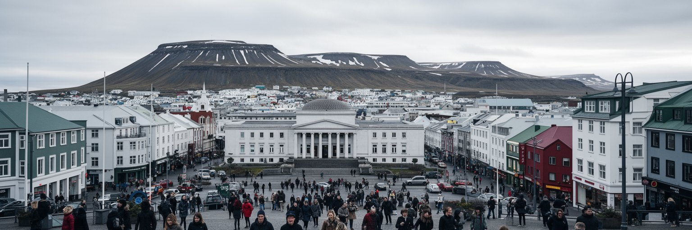
レイキャビクの政治的な重みは、人口規模からは測れません。アイスランドの国会、官庁、最高レベルの行政、報道機関、大学、文化施設が首都に集中し、国内政策と国際交渉が日常の徒歩圏に置かれています。漁業資源の管理、欧州経済領域との関係、北極圏をめぐる外交、火山噴火や地震への危機対応、観光の過密管理、移民政策は、抽象的な議題ではなく街の仕事と暮らしに直結します。国土は広く人口は少ないため、首都の判断は地方の港町、農村、観光地へ強く届きます。逆に、噴火、漁況、航空便、為替、住宅費の変化はすぐ首都政治へ戻ります。レイキャビクは巨大な権力都市ではありませんが、国家の制度が小さな空間に詰まっている都市です。議会前の広場や中心部の通りでは、市民の抗議、選挙、文化行事が近い距離で重なり、小国民主主義の親密さと緊張が見えます。政治家、記者、研究者、市民団体、観光客が同じ通りを使うため、制度は遠い場所に隠れません。小さな首都では、政策の失敗も成功も住民の顔が見える距離で受け止められます。この近さが、透明性への期待と厳しい批判を同時に生みます。国際会議や北極関連の議論が開かれると、小さな中心部が一時的に外交都市へ変わります。首都の街路は、国内政治と海を越えた交渉の両方を受け止める舞台です。そこで市民の監視も働きます。
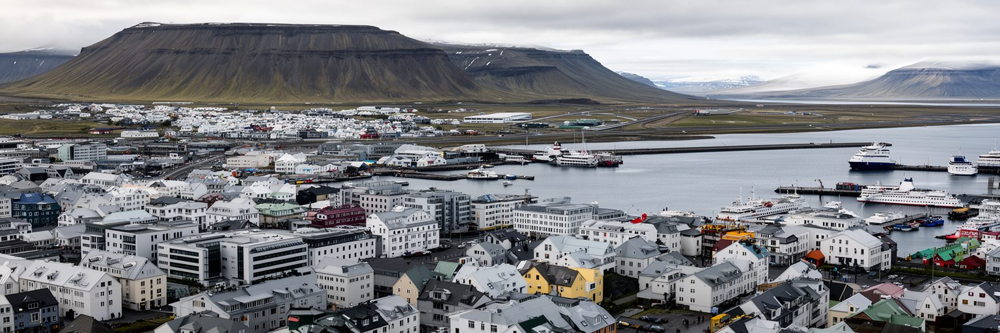
レイキャビクの港は、旧港の観光船や漁船だけでなく、東側の貨物機能を通じて島国の生活を支えます。食料、建材、燃料、消費財、観光サービスは、海上輸送と航空輸送なしには成り立ちません。国際線の玄関は南西のケプラヴィーク空港にあり、首都中心部には国内線や医療搬送に使われる空港が残ります。この二重の空港構造は、遠い地域を結ぶ必要と、市街地の土地利用をめぐる議論を同時に生みます。観光客にとっては空港から首都へ向かう道が旅の始まりですが、住民にとっては物流、医療、教育、仕事、家族訪問を支える生命線です。海と空の接続が止まれば、首都の小売、病院、建設、ホテルはすぐ影響を受けます。レイキャビクは小さな街に見えても、輸入、漁業、航空、港湾労働、観光バス、道路整備が複雑に絡む結節点です。港の匂い、魚料理の看板、空港バスの列は、島国首都の現実をよく示しています。旧港の飲食店やホエールウォッチングの船は観光の顔ですが、その近くには整備、燃料、冷蔵、廃棄物処理、漁業関連の仕事もあります。国内線空港をめぐる議論も、便利さと市街地の成長をどう両立するかという都市計画の論点です。島国では移動の選択肢が限られるため、港と空港は生活の安心そのものになります。物流の弱さはすぐ価格へ反映されるため、港湾と空港の安定は家計にも強く直結します。
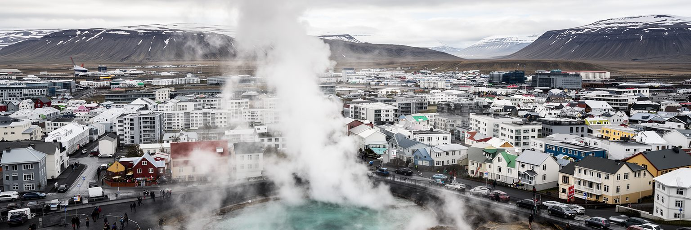
レイキャビクの暮らしを特徴づけるものの一つが地熱です。暖房、温水、プール、歩道の融雪、公共施設の運営には、火山島の地下から得られる熱が深く関わります。寒冷な緯度にありながら家庭の暖房が比較的安定し、温水プールが市民の社交場になる背景には、地熱と水力を中心にしたエネルギー構造があります。ただし、再生可能エネルギーが豊富であることは、すべての課題が解決しているという意味ではありません。送配電、自然保護、アルミ産業など電力多消費産業との関係、観光施設の需要、地震や噴火によるインフラリスクは常にあります。温泉やブルーラグーンのイメージは観光資源ですが、その背後には配管、発電所、料金、環境評価、専門技術者の仕事があります。レイキャビクを環境都市として見るなら、きれいな広告だけでなく、エネルギーを誰が管理し、自然への負荷をどこまで許すのかを読む必要があります。湯気は都市の快適さであると同時に、火山島の不安定さも伝えています。市民が日常的に通うプールは、運動施設であり、世代を越えた会話の場でもあります。温水のある暮らしは冬の暗さを和らげますが、インフラが一部の地熱地域や送水管に依存するほど、噴火や地震への備えも欠かせません。環境に優しい都市という評価は、設備を維持する技術と自然への慎重さに支えられています。
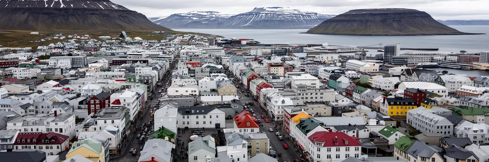
レイキャビクの産業は、行政、大学、医療、観光、港湾、IT、デザイン、音楽、飲食、建設が重なって成り立ちます。人口が小さいため、職場同士の距離は近く、同じ人が文化、教育、起業、行政の複数の場で役割を持つこともあります。観光の拡大はホテル、ガイド、レストラン、レンタカー、清掃、空港送迎に雇用を生みましたが、同時に家賃、短期賃貸、物価、労働力不足を押し上げました。ポーランド、リトアニア、ウクライナなどから来た人を含む移民労働者は、建設、サービス、介護、清掃、飲食を支えます。観光客が見る整った中心部の背後には、早朝の仕込み、道路の除雪、港の作業、ホテルのベッドメイク、夜の厨房があります。レイキャビク経済を数字だけで見ると、高所得の小国首都に見えますが、生活費の高さと住宅不足は働く人の選択肢を狭めます。都市の持続力は、訪問者を集める力だけでなく、支える人が住み続けられる条件で測る必要があります。学生が学び、介護職が通い、調理人が夜に帰宅し、清掃員が朝のホテルを整える時間まで含めて都市経済です。観光の繁忙期には短期雇用が増えますが、言語支援、労働契約、住宅、保育が弱いと生活は不安定になります。小さな労働市場だからこそ、一つの産業の伸びが街全体の賃金と住まいへ波及します。産業政策は観光宣伝だけでなく、労働者の住宅と技能を守る政策でもあります。
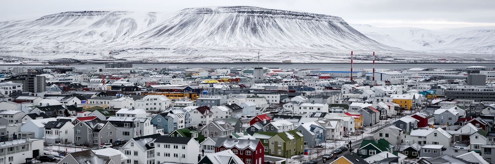
レイキャビクの日常は、低層住宅、車移動、バス、学校、温水プール、海沿いの散歩、冬の暗さ、夏の長い明るさで形作られます。生活圏は中心部だけでなく、コーパヴォグルやハフナルフィヨルズルなど周辺自治体へ広がり、首都圏全体で通勤、買い物、学校、医療が結びつきます。課題は住宅です。観光需要、人口増、建設費、土地利用の制約が重なり、若者、学生、移民労働者、単身者、子育て世帯に負担がかかります。小さな都市では、住宅不足がすぐ職場の人手不足や学校の地域構成に影響します。冬の気候は厳寒というより風と暗さの負担が大きく、車を持たない人、高齢者、夜勤者、低所得世帯には移動と暖房費が重要になります。一方で、プールや図書館、学校、地域スポーツは公共生活の軸です。レイキャビクの暮らしを読むことは、北欧的な福祉の印象だけでなく、住宅市場、物価、移民支援、公共交通、孤立への対応を具体的に見ることです。小さな首都ほど、生活の不具合は互いに近く連鎖します。中心部の短期賃貸が増えれば、学生や若い家族は遠くへ移り、通勤と保育の負担が増えます。公共交通が限られる地域では、車を持てるかどうかが生活の自由度を左右します。冬の暗い時間には、照明、歩道の安全、近所の見守りも重要です。便利で安全という都市像の裏側で、誰が中心に残れるのかが問われています。
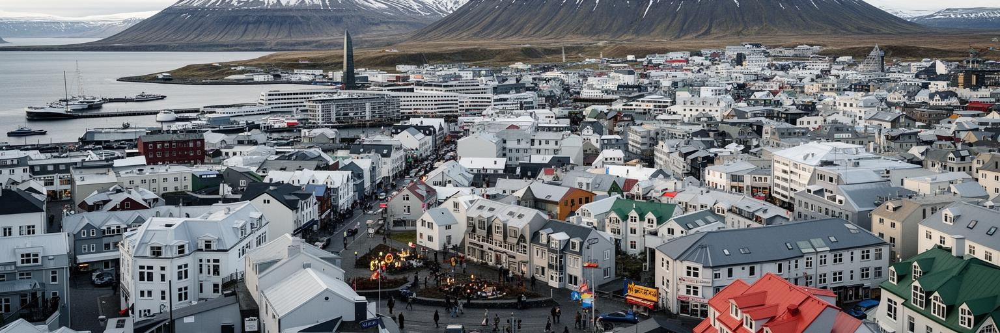
レイキャビクの文化は、人口規模に比べて外へ届く力が大きいことで知られます。文学、サガの記憶、現代音楽、デザイン、映画、写真、クラブ、小さなライブハウス、出版社、大学、芸術祭が密に結びつきます。街が小さいため、作り手、観客、店、学校、行政、観光客の距離が近く、実験的な表現がすぐ地域の話題になります。ハルパのような大きな文化施設は国際的な舞台を作りますが、同時に小さなバー、書店、スタジオ、アトリエ、学校の発表も都市文化を支えています。Iceland Airwavesや文化の夜、プライド、RUVの放送、SNSの告知は、冬の暗さの中でも人を街へ集めます。文化は観光商品にもなり、街の雰囲気や音楽のイメージが旅行者を引き寄せます。しかし、家賃や物価が上がれば、若い作り手や小規模な店は中心に残りにくくなります。文化都市としての力は、国際的な名前だけでなく、地元の人が練習し、発表し、失敗できる場所を持てるかで決まります。レイキャビクの文化は、荒い天候と長い夜を背景に、人が集まって語り、聴き、飲み、作る生活の延長として育っています。観光客が求める独特の空気は、偶然生まれるものではありません。学校教育、公共助成、ラジオ、書店、地域の祭り、友人同士の表現環境が積み重なって支えます。国際的な成功が増えるほど、地元の表現が外向けの商品だけにならないよう、住民が使う文化の場所を守ることが大切です。
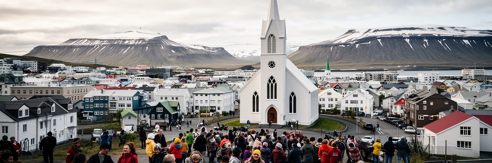
レイキャビクの象徴として目立つのはハットルグリムス教会ですが、都市の信仰生活は一つの建物だけでは説明できません。ルター派の伝統は国家儀礼、家族行事、音楽、墓地、季節の行事に残り、教会は観光名所であると同時に地域の記憶を支えます。近年は移民の増加によって、カトリック、正教会、イスラム教、仏教、ヒンドゥー教などの生活も見えやすくなっています。信仰は礼拝だけでなく、言語、食、学校、葬送、祝祭、相談支援と結びつきます。小さな首都では、多文化化が抽象的な政策ではなく、保育園の連絡、職場のシフト、医療通訳、宗教上の食事、休日の扱いとして現れます。観光客には均質で静かな北欧都市に見えるかもしれませんが、実際のレイキャビクは多国籍の労働と家族に支えられています。違いを隠して同化させるのではなく、小さな公共機関や地域施設がどう受け止めるかが重要です。教会の鐘と移民の生活暦が同じ街に重なることで、首都の文化は少しずつ更新されています。学校では複数の母語を持つ子どもが増え、職場では英語やポーランド語が日常的に聞こえます。宗教施設やコミュニティ団体は、孤立しやすい新住民にとって相談と安心の入口になります。多文化化は街を派手に変えるより、名前の読み方、食事、休日、葬儀、子どもの行事を丁寧に調整する形で進みます。
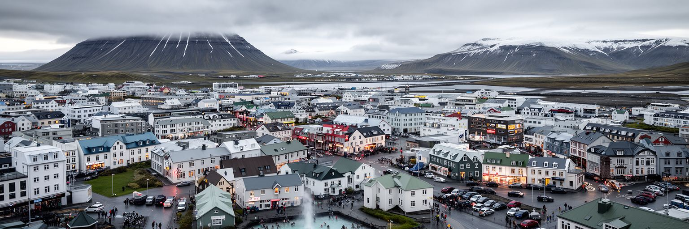
レイキャビク観光は、街そのものと周辺自然への入口が一体になっています。中心部では教会、港、博物館、ハルパ、海沿いの彫刻、カフェ、プールを歩き、郊外へ出れば温泉、溶岩原、滝、間欠泉、氷河、オーロラ観測へ向かいます。この構造は観光客に強い魅力を与えますが、都市には宿泊、バス、レンタカー、道路、廃棄物、物価、短期賃貸の負担をもたらします。自然を売りにする観光ほど、天候、火山活動、道路閉鎖、救助、環境保護に依存します。旅行者が短い滞在で消費する景色の背後には、ガイド、運転手、清掃員、受付、救急、気象情報、道路管理の仕事があります。観光が地域経済を支える一方で、住民向けの店が土産物や宿泊向けに変わり、中心部の家賃が上がることもあります。レイキャビクを訪れることは、自然の美しさだけでなく、自然を都市経済へ組み込む難しさを見ることです。観光の成功は、訪問者数ではなく、自然環境と住民の日常をどこまで守れるかで判断されるべきです。冬のオーロラ、夏の白夜、温泉、火山地形は強い商品になりますが、天候が悪い日にも人を安全に案内する体制が必要です。中心部の小さな通りに大型バスや短期滞在者が集中すると、住民の移動や静けさも変わります。レイキャビクは自然観光の玄関口であるほど、都市生活を守る観光政策が欠かせません。
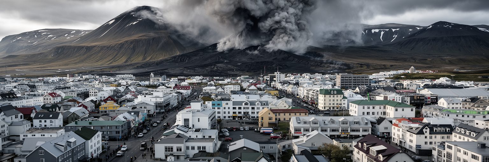
レイキャビクは火山島の首都であり、災害と気候を日常の外に置くことはできません。近年のレイキャネス半島の噴火や地震は、空港、道路、温水供給、観光、住宅、避難計画がどれほど自然条件に依存しているかを示しました。噴火地点が中心部から離れていても、溶岩流、ガス、地震、インフラ寸断、観光客の安全、住民の不安は首都圏の課題になります。冬は暴風、雪、凍結、暗さが移動や精神的な健康に影響し、夏は長い日照が生活リズムを変えます。気候変動は氷河、海岸、漁業、観光シーズン、道路管理にも関わります。小さな国では専門機関、自治体、住民、観光業者の連絡が早く届く利点がありますが、代替道路や住宅、医療、避難先の選択肢は限られます。防災は巨大な堤防だけでなく、気象情報を読む習慣、道路閉鎖への理解、温水インフラの保守、多言語案内、旅行者への責任として現れます。レイキャビクの安心は、自然を制御することではなく、変化を早く察知し、暮らしを戻す力にあります。観光客が多い都市では、災害情報を住民だけでなく訪問者へも届く形にする必要があります。火山活動がニュースになると、予約、航空、宿泊、道路、学校、医療が同時に影響を受けます。自然の近さを魅力として語るなら、その危険を過小評価しない態度も同じだけ重要です。小さな首都の防災は、科学と行政と日常判断の連携で成り立ちます。
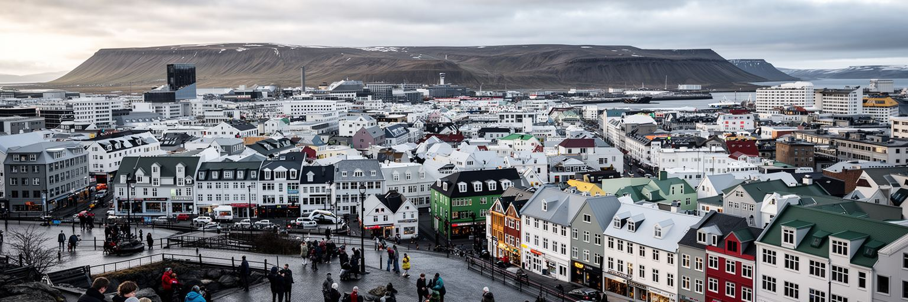
レイキャビクは、世界都市という言葉から連想される巨大な人口や金融街とは違う形で重要な首都です。北大西洋の島国で、国家制度、港、空港、大学、観光、地熱、住宅、移民労働、文化表現、自然災害が非常に近い距離で結びついています。小さいことは弱さだけではありません。意思決定が近く、文化の声が届きやすく、自然との関係を実感しやすい利点があります。一方で、住宅不足、物価、観光依存、移民支援、インフラの代替性、火山リスクは、規模が小さいからこそ逃げ場が少ない論点です。街の美しい色彩、港の散歩道、温水プール、音楽、オーロラ観光だけを見ると、都市の緊張は見えにくくなります。レイキャビクを読むには、穏やかな低層の景観の背後にある国家運営、労働、エネルギー、住宅、自然リスクを同じ地図に置く必要があります。ここでは、北欧福祉国家の安心、観光経済の速さ、火山島の不安定さ、多文化化する日常が重なります。ハンドボールやサッカーの応援、プールに通う子ども、温水で体をほぐす高齢者、港の魚の匂いも同じ地図に入ります。巨大都市のように何百万人を集めるわけではありませんが、北極圏に近い外交、再生可能エネルギー、観光の過熱、移民労働、住宅市場、火山災害という現代的な論点が一つの街に集まります。中心部を歩く短い時間の中で、国会、港、教会、プール、大学、ホテル、住宅地が次々現れることも特徴です。レイキャビクは、都市の大きさではなく密度で読む首都です。